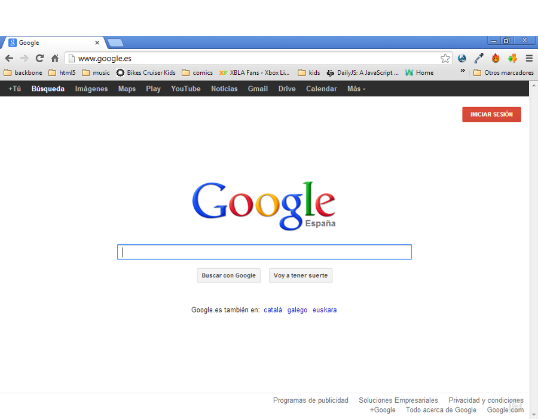
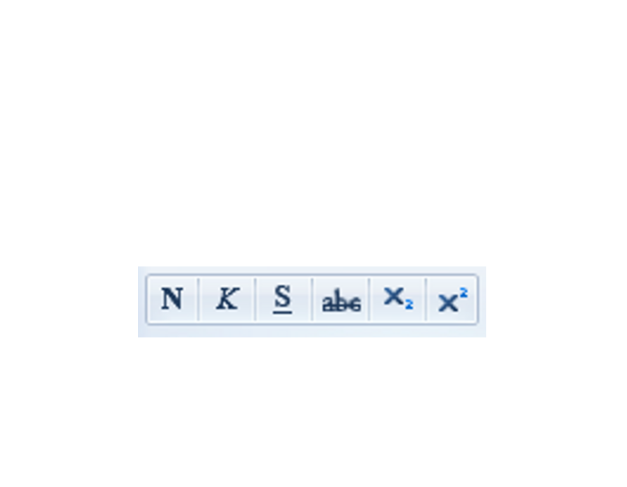
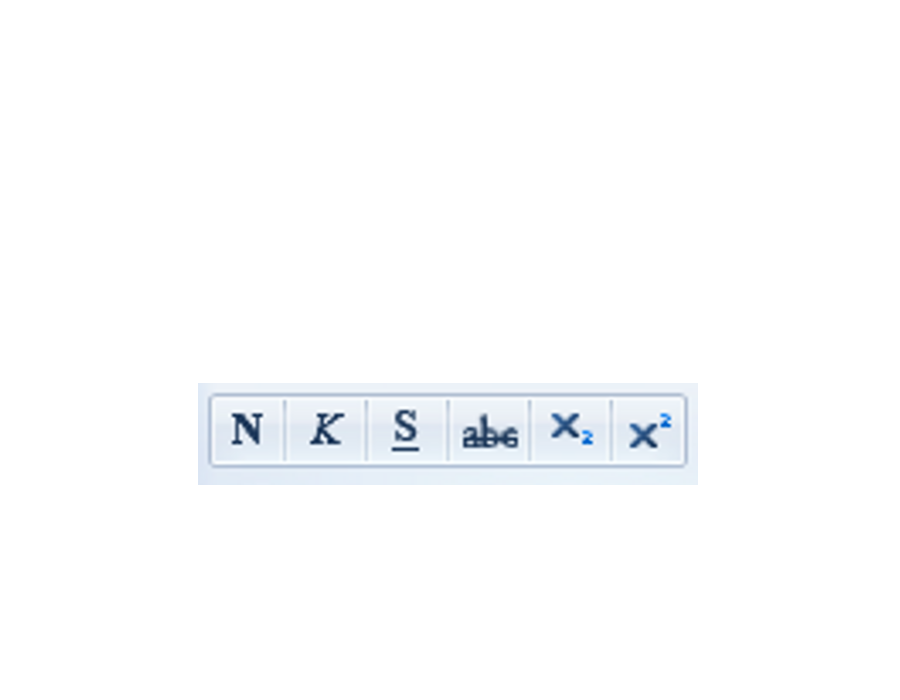

Iniciación a la informática e Internet
WordPad
Creación de un documento con WordPad
Apreta la tecla → para avanzar.

Creación de documentos
Vamos a realizar el siguiente ejercicio:
- Busca en Google información sobre la ópera La flauta mágica de Mozart. ¿En qué año se estrenó?
- Crea un documento de WordPad escribiendo algo de información que encuentres sobre esta obra y guárdalo en una carpeta del disco.
- Mándame un correo adjuntando el documento que has creado.

Abrir WordPad

WordPad es una aplicación y por tanto debemos abrirla. Veamos donde está ubicada para poder abrirla.
- Buscándola en el menú inicio. Utilizando la función de búsqueda del menú inicio la encontraremos.
- Navegando por el Menú Inicio. Todos los programas > Accesorios > WordPad.

Zonas de WordPad
Vamos a ver las herramientas que nos proporciona WordPad para la edición de textos.
- Zona central de edición. Es la hoja en blanco donde podemos escribir nuestro texto utilizando el teclado y el cursor de edición.
- Barra de herramientas con iconos Todas las utilidades con las que podremos formatear nuestro documento están en la zona superior y utilizaremos el ratón para hacer uso de ellas.


Cambia de foto con las teclas: ↑ y ↓
Barra de herramientas
Comentemos las principales herramientas de las que disponemos en WordPad para dar formato a nuestro documento.
- Barra de herramientas de fuente. Desde ella podemos hacer cosas como cambiar el tipo de fuente, el tamaño del texto, o las propiedades (negrita, subrayado, color, etc.)
- Barra de herramientas de párrafo Desde ella podemos cambiar propiedades como la alineación del texto (izquierda, centro, derecha, justificado), o el interlineado (distancia entre líneas).

 



Cambia de foto con las teclas: ↑ y ↓


Cambia de foto con las teclas: ↑ y ↓
El cursor de edición
En la pantalla siempre vemos el puntero del ratón que podremos mover para seleccionar texto o aplicar formatos.
Pero si os fijáis veréis también un cursor parpadeante, es el cursor de edición que indica dónde empezaremos a escribir cuando tecleemos.
Seleccionar
Vamos a explicar ahora una de las técnicas básicas de la edición de textos, que nos permitirá acelerar muchísimo la creación de documentos que hagamos.
- Queremos seleccionar un conjunto de texto para aplicar cambios en conjunto. Puede ser una palabra o varias, un párrafo o varios.
- Utilizaremos la técnica drag&drop para seleccionar. Llevaremos el cursor de edición al inicio o al final del texto a seleccionar, y con el ratón pulsando el botón izquierdo del ratón, iremos hasta el otro extremo del texto.


Cambia de foto con las teclas: ↑ y ↓
Guardar documentos

Para guardar un documento debemos elegir una ubicación y un nombre de documento.
- Ubicación. Es la carpeta donde se guarda el documento. De momento no la cambiaremos, utilizaremos la biblioteca Documentos.
- Nombre. Es el nombre de documento que describe nuestro trabajo.
Cambia de foto con las teclas: ↑ y ↓
Enviar por correo

Finalmente, ¿sabrías enviarme el documento que acabas de crear por correo electrónico?